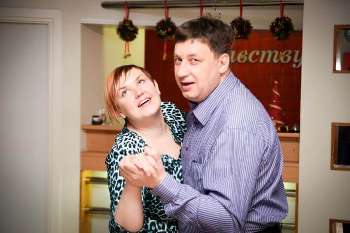
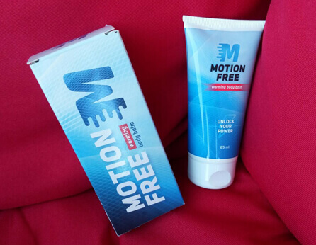
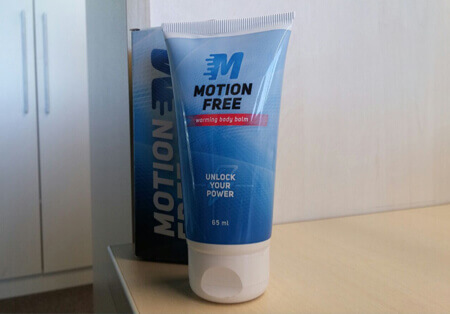
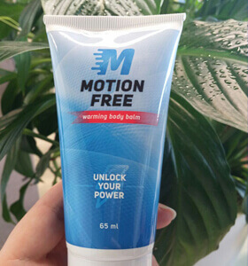

"Kad locītavas traucē dzīvot ierasto dzīvi, mums atliek cerēt tikai uz brīnumu!" - Ekskluzīva intervija ar leģendāro vīru, kas paveica brīnumu!

Šodien mūsu viesis ir leģendārais inovators no Rīgas, LV - Dr. Toms Osis, PhD.
Labrīt, Dr. Osi. Laikam jāsāk ar pāris vārdiem par jums?
Es piedzimu Ventspilī. Absolvēju Latvijas Universitāti 1975. gadā. Savu topošo sievu Iru satiku universitātē. Līdz 2009. gadam strādāju par ortopēdu.

Bet kas notika 2009. gadā un kādēļ pametāt savu darbu kā ortopēds?
2007. gadā Irai ceļgalā tika konstatēts osteoartrīts. Jāatzīst, ka tas mūsu dzīvē bija pagrieziena punkts, toreiz man tas šķita kā milzīgs pārbaudījums. Nākamo 2 gadu laikā mēs izmēģinājām visu: fizioterapiju, vingrošanas pārtraukšanu, dzērām daudz vitamīnu un pārtikas bagātinātāju (hondroitīnu, glikozamīnu, MSM un citus), lietojām gelus, ziedes. Viss bija velti. Nekas nelīdzēja un mēs bijām pilnībā izpostīti. Es nespēju noticēt, ka nebija nekā tāda, kas varētu palīdzēt manai sievai, pat ar manām medicīniskajām zināšanām un pieredzi. Mūsu veselības aprūpe mani sarūgtināja. Vai eksistēja veids kā mūsu mīļotajiem nodrošināt laimīgu un ilgu dzīvi? Es sāku pētījumus.


Kādus pētījumus? Vai varat padalīties?
Kad attopies, ka tava sieva pēc dažiem gadiem nespēs staigāt, tu dari visu, kas tavos spēkos, lai no tā izvairītos. Es sāku pētījumus. Esmu izstudējis visus materiālus saistībā ar locītavu slimībām, gan tiešā, gan netiešā veidā. Man nācās saskarties fizioloģiju, psihosomatiku, bioķīmiju - viss, ko varat iedomāties. Es iztērēju gandrīz visu savu naudu, lai uzzinātu visus noslēpumus no labākajiem speciālistiem šajā jomā, kas specializējas Āzijā, kas noteikt saprot šo pacientu problēmas saskarē ar sliktām locītavām daudz labāk nekā mēs.
2009. gada decembrī es sapratu, ka ja tu miksē dažādas sastāvdaļas, tu vari iegūt līdzekli, kas tevi uz mūžu atbrīvos no locītavu sāpēm. Bet mani gaidīja pārsteigums: nepieciešamās sastāvdaļas šajā valstī netika pārdotas. Es aizņēmos naudu un pasūtīju tās no Āzijas. Nepieciešamās sastāvdaļas ieradās mēnesi vēlāk, bet tad mani gaidīja jauns pārsteigums - neviens nevēlējās izveidot pareizo miksējumu labaratorijas apstākļos. Par laimi mani izglāba mani universitātes draugi. 3 nedēļas vēlāk es ieguvu īsto formulu un Ira to izmēģināja.
Visu varenais Dievs! Nezināju, kur likties no laimes!
Kas? Kas notika?
Ira sāka justies labāk un labāk ar katru dienu. Pēc 7 ārstniecības dienām viņa devās uz veikalu un nopirka pārtiku. Viņas sejā beidzot parādījās smaids, kas man ļoti bija pietrūcis. Vēl pēc 2 nedēļām artrīts bija pilnībā izzudis! Tas izklausījās pārāk labi, lai būtu patiesība, bet testi uzrādīja, ka Ira bija pilnībā vesela. Es jutos kā septītajās debesīs. Tā bija īsta uzvara!

Tu esi lielisks vīrietis un piemērs mums visiem! Bet tad tu nolēmi doties tālāk, vai ne?
Ne uzreiz. No sākuma mēs vienkārši izbaudījām dzīvi un novērtējām katru momentu. Tas bija laiks, kad Irai piedzima mūsu brīnišķīgā meita. Viņa bija tik pateicīga par ārstēšanu, jo grūtniecība arī ir liela slodze locītavām.
Kādu vakaru Ira man jautāja, vai LV ir daudz cilvēku ar sāpīgām locītavām? Mēs aplūkojām statistiku un atklājām, ka daudziem cilvēkiem ir tādas pašas problēmas. Vairāk nekā 1 miljons cilvēku LV slimo ar kādu locītavu slimībām. Tad viņa uzdeva man jautājumu, kas uz mūžu mainīja manu dzīvi: "Vai tu vari palīdzēt citiem cilvēkiem, tāpat, kā palīdzēji man? Padarīt viņus laimīgus?" Es atkal viņā iemīlējos. Šī sieviete ir labākais, kas ar mani jebkad ir noticis. Un es piekritu. Tas aizņēma apmēram 3 gadus - radīt perfektu formulu un radīt - labāko, ko mūsu valsts iedzīvotāji var atļauties.
Tas izklausās ļoti iedvesmojoši. Pastāsti mums vairāk par .
Mēs ar Iru paveicām ko tādu, ko neviens pirms mums nebija darījis. ir revolucionārs balzāms, kas balstīts uz:
- Labības zāles saknes
- Ciedra gumiju
- Bērza sulu
- Piparmētru eļļu
- Un daudziem citiem būtiskiem komponentiem.
Diemžēl vairums šo sastāvdaļu mūsu valstī netiek pārdotas, tāpēc mēs tās ievedam no Āzijas.
Pateicoties šai unikālajai formulai, tiek galā ar jebkuru locītavu slimību:
- Artrītu
- Artrozi
- Koksartrozi
- Osteoartrozi
- Osteohondrozi
- Osteohondrotītu
- Osteoporozi
- Meniska ievainojumiem
- Gonartrozi
- Tas ir neticami! Jūs esat īsts mūsdienu inovators! Kā jūs to panācāt?
Jūs aizmirsāt, ka tas prasīja ilgus gadus smaga darba. Nākamgad mēs svinēsim mūsu 10. jubileju. Šajā laikā 17 934 cilvēki sāka pilnvērtīgu dzīvi un uz mūžu aizmirsa par savām locītavu sāpēm.
Jūs ziniet, mēs ar Iru to nedarījām tikai ar nolūku pelnīt naudu. Mēs vienkārši vēlējāmies atgriezt cilvēkiem veselību. Ja vēlaties, varat mūs saukt par vecmodīgiem. Starp citu, mēs katru mēnesi veicam loteriju un izspēlējam vērtīgas balvas cilvēkiem, kas lieto mūsu produktus:
Kur cilvēki var nopirkt ?
Diemžēl pagaidām aptiekās to nevar nopirkt. Farmācijās valda lielie zīmoli un tikai daži atsevišķi
piegādātāji var ar tām sadarboties. Un viņi savus produktus pārdod par augstām cenām. Dažkārt šīm zālēm ir
briesmīgi blakusefekti.
Mums ir oficiāla mājaslapa, kur jūs varat iegādāties oriģinālo
.
Ko jūs vēlētos novēlēt mūsu lasītājiem?
Mēs ar Iru esam nolēmuši samazināt cenu par 50%. Tagad ikviens var izmantot šo piedāvājumu
kamēr tas ir spēkā! Pēc šī datuma tiks pārdots par tik zemu cenu.
Esiet veseli!
Tas ir labākais, kas jums ir. Nekāds naudas daudzums nenesīs jums laimi.
Vēlu jums veiksmi!


Anna Zīle
Dr. Osi, esmu ļoti pateicīga par šo līdzekli. Es jau ilgu laiku meklēju ko līdzīgu. Tagad gaidu, kad saņemšu savu paciņu! Paldies
pirms stundas
Māra Saulīte
Man bija artroze, bet tagad tās vairs nav. Tikai viens balzāma lietošanas kurss! Paldies par to!
pirms stundas
Sintija Zāle
Es jūs tiešām atbalstu! Šis ir ļoti efektīvs līdzeklis locītavu problēmām! Mani elkoņi un ceļgali vairs nesāp.
pirms stundas
Andris Kalniņš
Paldies par šo balzāmu, Dr. Osi!!! Jūs ne tikai izglābāt manu sievu, bet arī daudzus citus cilvēkus valstī. Es nolēmu pamēģināt mugurkaula problēmām. Man ir osteohondroze un tas man tiešām palīdzēja. Es domāju viss būs kārtībā!

pirms stundas
Toms Osis
Andri, neuztraucies un turpini lietot . Tomēr ir būtiski ievērot instrukciju, lai lietotu šo balzāmu.
Ar cieņu, Toms.
pirms stundas
Ģirts Ozols
Vai kāds man var palīdzēt? Esmu tik noguris no muguras sāpēm. Tās mani pilnībā nomāc. Es vienkārši nezinu, ko lai dara. Es lietoju visa veida tabletes, ik pa laikam klāju dažādus gelus, bet nekas nepalīdz :(
pirms stundas
Dāvis Mārītis
Ģirt, pasūti un tu to nenožēlosi. Man arī bija problēmas ar locītavām un es pat nespēju staigāt. Man jāsaka paldies mātei, kas kaut kur atrada šo balzāmu un ieteica man to lietot. Mana māte to nopirka pirms 6 mēnešiem un samaksāja pilnu cenu (bet es domāju, ka cena tik un tā nebija pārmērīga). Bet tagad man ar locītavām vairs nav problēmu. Varu normāli kustēties. Tici man, tā ir laba lieta! Ar tevi viss būs kārtībā un tu to saņemsi ar 50% atlaidi.
pirms stundas
Natālija Ivanova
Kā es varu pasūtīt balzāmu?
pirms stundas
Dins Zēģelis
Natālija, šeit ir links uz oficiālo mājaslapu, bet es ieteiktu tev pasteigties, ja vēlies to saņemt ar 50% atlaidi. Tas man ļoti palīdzēja.
pirms stundas
Natālija Ivanova
Paldies, Din. Es tikko to pasūtīju. Un cik ilgu laiku aizņem tā piegāde?
pirms stundas
Dins Zēģelis
Natālija, apmēram 3 dienas
pirms stundas
Irēna Vintere
Es šo balzāmu pasūtīju pirms diviem mēnešiem savai māsai. Viņa jau ilgu laiku cieta no artrīta. Viņa pēc tam man pateicās. Es vienkārši izmantoju iespēju un pasūtīju to viņai.
pirms stundas
Kārlis Zvaigzne
Māra, vai šis balzāms patiesi ir tik efektīvs? Laikam man arī tas japasūta. Tas ir ar 50% atlaidi, vai ne?
pirms stundas
Manfrēds Ķirsis
Es arī kaut kur kaut ko dzirdēju par šo līdzekli. Man šķiet daži mani draugi to jau pasūta. Man jau divus gadus ir problēmas ar kājām. Sāpes nereti ir nepaciešamas un ārsti īsti nevar palīdzēt. Es vienkārši arī nolēmu pasūtīt . Es domāju, ka pamēģināšu.
pirms stundas
Henrijs Kārkls
Jā, izskatās, ka daudziem cilvēkiem ir problēmas ar locītavām. Es pirms mēneša ieraudzīju reklāmu un tas mani paglāba no osteohondrozes ātrāk nekā daudzi citi līdzekļi.
pirms stundas
Aleksis Murds
Vai tas palīdzēs? Vai kāds zin? Aptiekas un ārsti nekam neder.
pirms stundas
Linda Kovaļova
Aleksi, protams, ka jā. Tas ir efektīvs un tam nav blakusefektu. Tāpēc pasteidzies un pasūti to! man pilnībā palīdzēja atbrīvoties no muguras sāpēm.
pirms stundas
Daina Vālodze
Paldies, man ļoti palīdzēja! Es to iegādājos oficiālajā mājaslapā! Neatlieciet savu ārstēšanos. Labāk ir ārstēties tagad, nekā vēlāk to rūgti nožēlot.

pirms stundas
Sandra Liepa
Paldies jums, Dr. Osi. Ja jūs nebūtu, es neticētu, ka ir tik efektīvs! Es 5 gadus dzīvoju ar vīru, kam ir tā pati problēma, kas jūsu sievai. Viņš šausmīgi cieta. Un tagad viņš skraida apkārt it kā viņam atkal būtu 18.
Un paciņa tika piegādāta ļoti ātri.
pirms stundas
Toms Osis
Sandra, tas ir OK. Tu man labāk pastāsti, cik ilgu laiku paņēma atveseļošanās.
Ar cieņu, Toms
pirms stundas
Sandra Liepa
Tom, tas viņam aizņēma aptuveni mēnesi. Tagad viņš var brīvi kustēties un vairs nesūdzas kā ierasts. Es tagad esmu ļoti laimīga.
pirms stundas
Toms Osis
Es saprotu, Sandra, paldies.
Ar cieņu, Toms
pirms stundas
Helēna Gulbe
Rezultāts vienkārši pārspēja visas manas gaidas. Išiass ir zudis uz mūžu! Es arī to pasūtīju saviem draugiem. Viens no viņiem cieš no muguras sāpēm un citam ir sāpīga elkoņa locītava.
Pirms 57 minūtēm
Laura Groziņa
Es tikko aizpildīju veidlapu viņu mājaslapā...
Es biju pārsteigta par to, ka viņi man to tiešām pārdeva ar 50% atlaidi!
Es viņu mājaslapā ierakstīju savu tālruņa numuru un viņi dažu minūšu laikā man atzvanīja un apstiprināja manu pasūtījumu. Tagad vēlos dzīvot bez sāpēm un atkal sākt izbaudīt pastaigas.
Pirms 55 minūtēm
Karīna Sondore
Es arī sev to pasūtīju. Artrīts pēdējo gadu laikā mani šausmīgi nomocīja. Ikreiz, kad līst vai ir laika izmaiņas, sāpes mani burtiski nogalina. man palīdzēja pāris nedēļu laikā. Es pat nespēju iedomāties, ka tas varētu būt iespējams.
Pirms 53 minūtēm
Zinta Zvirbule
Mūsu draugs šo balzāmu pārdod aptiekā par gandrīz 60 eiro un tāpēc mēs nolēmām to neiegādāties. Kad ieraudzīju šo piedāvājumu es nekavējoties nolēmu iegūt to par velti. Mēs esam pensionāri un mēs nevaram tērēt daudz naudas. Mani ceļgali vairs nesāp un tagad es varu strādāt dārzā. Paldies!
Pirms 48 minūtēm
Toms Osis
Zinta, tātad aptiekās tomēr pārdod šo produktu. Ir slikti pelnīt naudu šādā veidā uz slimu cilvēku rēķina. Mēs sāksim novērot vietas uz kurām piegādājam savu produkciju.
Ar cieņu, Toms
Pirms 36 minūtēm
Elīna Jope
palīdzēja man atbrīvoties no podagras jau 1. kursa laikā un tagad es vienmēr to turu pa rokai.
Pirms 36 minūtēm
Gunārs Pētersons
Es arī to pasūtīju viņu mājaslapā. Tas man ļoti palīdzēja. Ja jums ir problēmas ar locītavām, nav nekā labāka, ticiet man. Un viņi veic ātru piegādi. Mana paciņa ieradās tikai 3 dienu laikā.
Pirms 39 minūtēm
Toms Osis
Paldies, Gunār! Mēs cenšamies un piegādājam saviem klientiem cik ātri vien iespējams, lai viņi nekavējoties varētu uzsākt ārstēšanās kursu.
Ar cieņu, Toms
Pirms 36 minūtēm
Edijs Dzelme
Es izlasīju šo rakstu un uzreiz nolēmu pasūtīt šo balzāmu un to izmēģināt. Mani ļoti iedvesmoja stāsts par Tomu un viņa sievu. Patiesībā ikdienišķie līdzekļi man nepalīdzēja ilgu laiku. Man teica, ka artrīts ir grūti ārstējams. Tagad es vēlētos pastāstīt par ārstēšanās rezultātiem. tika piegādāts ļoti ātri. Jau pēc pirmās uzklāšanas es jutu lielu atvieglojumu un tāpēc nolēmu par to pastāstīt arī citiem. Esmu tik laimīgs, ka atkal varu normāli dzīvot!
Pirms 31 minūtes
Zigrīda Smilga
Vai kāds man var pastāstīt, kur iegādāties šo līdzekli? Es aptiekās to neesmu manījusi un esmu mazliet nobijusies iegādāties to internetā. Es negribētu nopirkt viltojumu. Es saprotu, ka tas nebūtu lietojams.
Pirms 27 minūtēm
Toms Osis
Es varu tikai atkārtoti pateikt, ka var pasūtīt TIKAI mūsu oficiālajā mājaslapā. Lai izvairītos no pārpratumiem, vienkārši apmeklējiet zemāk esošo saiti! Es vēlētos jums atgādināt, ka var iegūt ar 50% atlaidi, bet šis piedāvājums nebūs ilgs, tāpēc jums vajadzētu pasteigties!
Lūdzu uzmanieties no viltojumiem.
Ar cieņu, Toms
Pirms 15 minūtēm